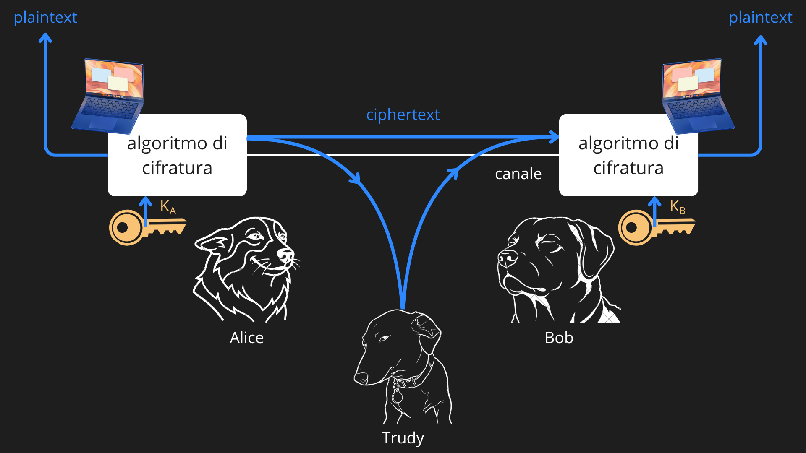
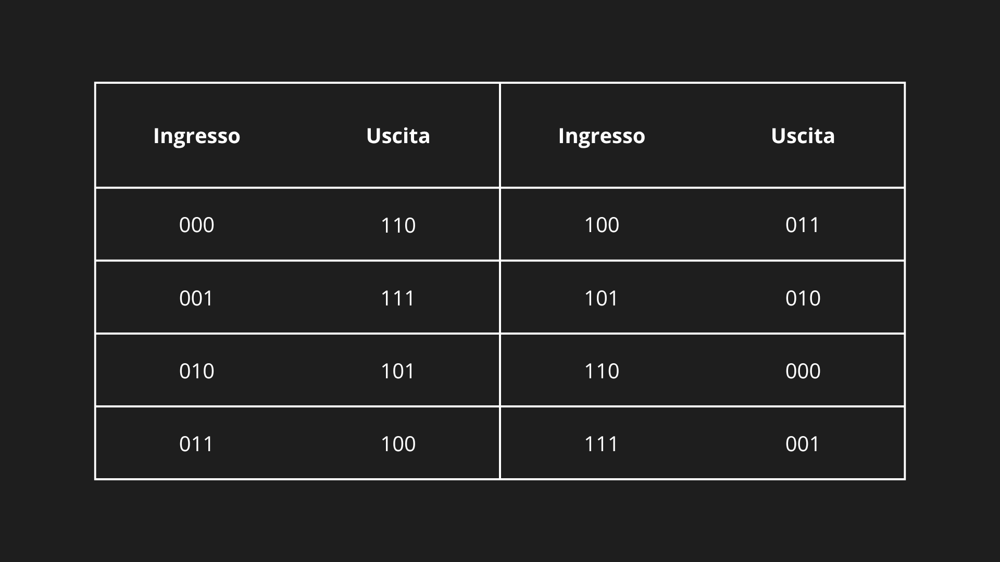
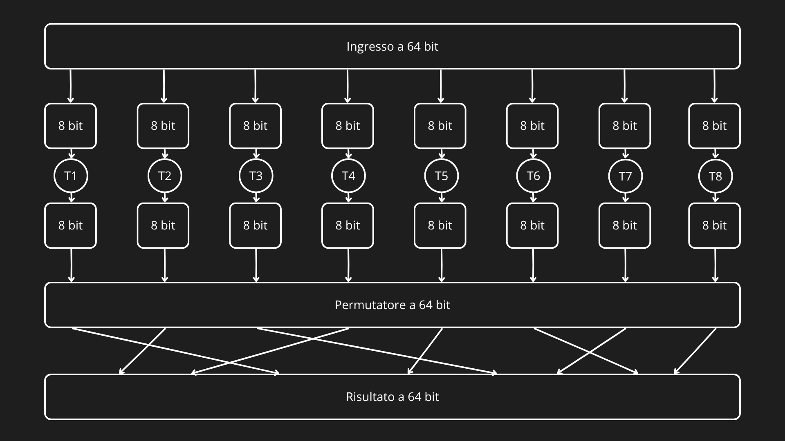
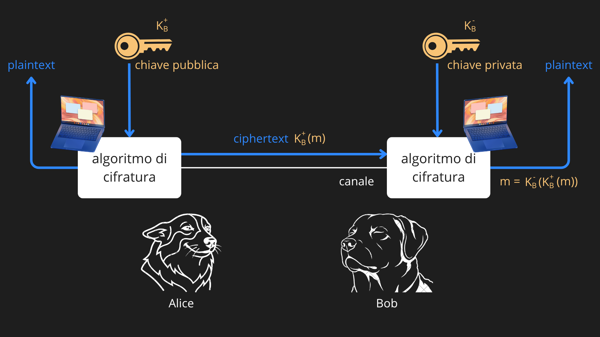
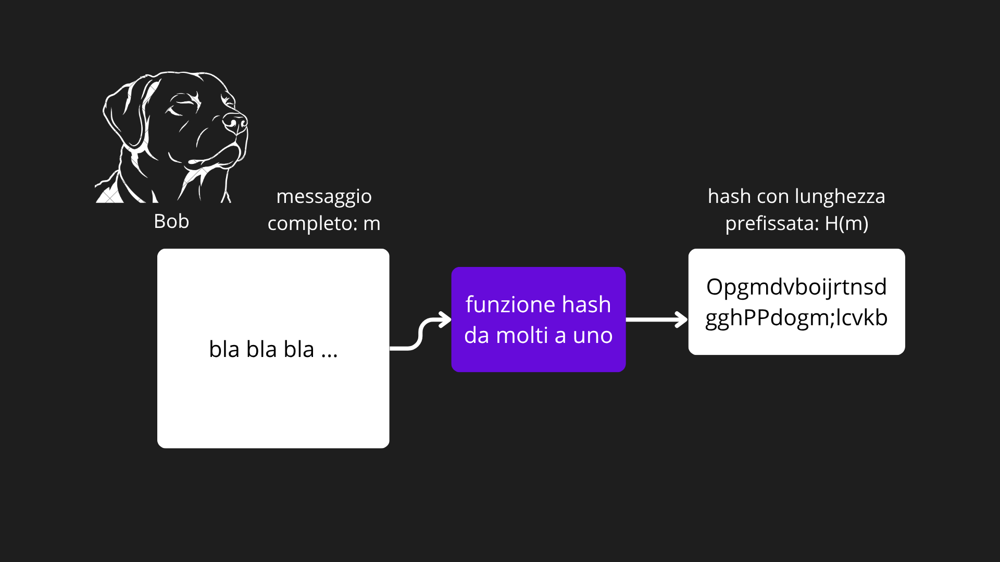
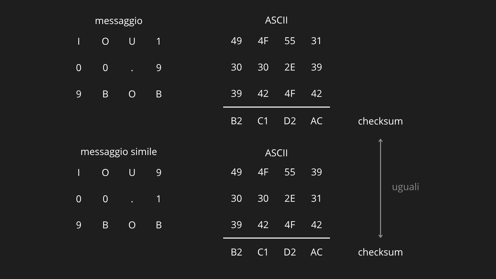
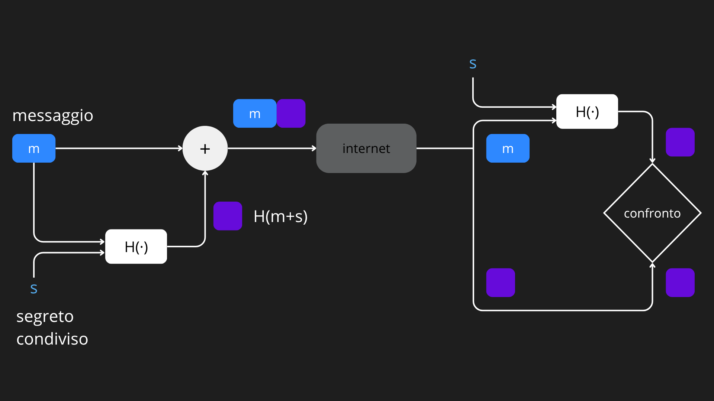

La sicurezza di rete comprende l’insieme delle tecniche e dei meccanismi progettati per proteggere le comunicazioni e le risorse di rete da accessi non autorizzati, intercettazioni e manipolazioni. Poiché i dati trasmessi su Internet possono essere osservati o alterati da soggetti malevoli, una comunicazione sicura deve garantire alcune proprietà fondamentali: la riservatezza, affinché solo i destinatari autorizzati possano leggere i dati, l’integrità, per assicurare che i messaggi non vengano modificati durante la trasmissione, l’autenticazione, che permette alle parti di verificare reciprocamente la propria identità, e la sicurezza operativa, volta a proteggere reti e sistemi da attacchi come intrusioni, malware e attacchi di tipo Denial of Service (DoS). Gli attaccanti possono infatti intercettare, modificare o eliminare i messaggi scambiati tra due dispositivi, impersonare utenti legittimi oppure compromettere il funzionamento delle infrastrutture di rete.
CRITTOGRAFIA
La crittografia rappresenta il fondamento della sicurezza delle reti moderne e costituisce lo strumento principale per garantire la riservatezza delle comunicazioni, oltre a contribuire ai meccanismi di autenticazione, integrità dei messaggi e non ripudio. Il suo obiettivo è impedire che un eventuale intercettatore possa comprendere il contenuto dei dati trasmessi, pur consentendo al destinatario legittimo di recuperarli correttamente.

Il messaggio originale, detto testo in chiaro (plaintext), viene trasformato mediante un algoritmo di cifratura in un testo cifrato (ciphertext), incomprensibile a chi non possiede le informazioni necessarie per decifrarlo. Sebbene gli algoritmi di cifratura siano generalmente pubblici e standardizzati, la sicurezza del sistema non dipende dalla segretezza dell’algoritmo, bensì dall’utilizzo di una chiave crittografica, cioè un’informazione riservata che controlla il processo di cifratura e decifratura. Il destinatario utilizza quindi una chiave per ricostruire il messaggio originale a partire dal testo cifrato. In base al tipo di chiavi utilizzate, i sistemi crittografici si distinguono in crittografia a chiave simmetrica, nella quale mittente e destinatario condividono la stessa chiave segreta, e crittografia a chiave pubblica, che impiega invece una coppia di chiavi differenti, una pubblica e una privata. Questi due approcci costituiscono la base delle moderne tecniche di sicurezza impiegate nelle reti e nei protocolli Internet.
Crittografia a chiave simmetrica
La crittografia a chiave simmetrica è un sistema di cifratura nel quale mittente e destinatario condividono la stessa chiave segreta, utilizzata sia per cifrare sia per decifrare i messaggi. La sicurezza del sistema non dipende dalla segretezza dell’algoritmo, che è generalmente pubblico, ma esclusivamente dalla segretezza della chiave. Lo scopo è trasformare il testo in chiaro (plaintext) in un testo cifrato (ciphertext) incomprensibile a chiunque non possieda la chiave corretta.
Example
Per comprendere il principio di funzionamento vengono presentati alcuni cifrari storici. Il cifrario di Cesare sostituisce ogni lettera del messaggio con quella posta a una distanza fissa nell’alfabeto. La chiave è costituita proprio dal numero di posizioni di spostamento. Sebbene semplice, questo metodo è facilmente violabile poiché il numero di possibili chiavi è molto ridotto. Un’evoluzione è rappresentata dal cifrario monoalfabetico, nel quale ogni lettera viene sostituita da un’altra secondo una corrispondenza arbitraria. Il numero di possibili chiavi cresce enormemente (26! per l’alfabeto inglese), rendendo impraticabile un attacco a forza bruta. Tuttavia il sistema rimane vulnerabile all’analisi statistica, poiché le lettere più frequenti e le combinazioni caratteristiche di una lingua continuano a comparire con frequenze riconoscibili anche nel testo cifrato.
Lettere in chiaro: a b c d e f g h i j k l m n o p q r s t u v w x y z Lettere cifrate: m n b v c x z a s d f g h j k l p o i u y t r e w qUn ulteriore miglioramento è il cifrario polialfabetico, che utilizza più alfabeti di sostituzione alternandoli secondo una determinata sequenza. In questo modo la stessa lettera può essere cifrata in modi diversi a seconda della sua posizione nel messaggio, rendendo molto più difficile l’analisi delle frequenze e aumentando la resistenza agli attacchi.
Lettere in chiaro: a b c d e f g h i j k l m n o p q r s t u v w x y z C1(k = 5): f g h i j k l m n o p q r s t u v w x y z a b c d e C2(k = 19): t u v w x y z a b c d e f g h i j k l m n o p q r sViene presentato uno schema di cifratura polialfabetica ottenuto applicando due volte il cifrario di Cesare, prima spostandosi di 5 posizioni (C1), poi di 19 (C2). In questo modo potremmo scegliere ad esempio di utilizzare la sequenza C1, C2, C2, C1, C2. Cioè, la prima lettera del testo in chiaro deve essere sostituita con C1, la seconda e la terza con C2, la quarta con C1 e la quinta con C2.
Cifrari a blocchi
I moderni algoritmi di crittografia simmetrica utilizzati nei protocolli di rete sono generalmente cifrari a blocchi (block ciphers). Il messaggio viene suddiviso in blocchi di lunghezza fissa (ad esempio 64 o 128 bit) e ogni blocco viene cifrato utilizzando la stessa chiave. Concettualmente, un cifrario a blocchi realizza una corrispondenza biunivoca tra ciascun blocco di testo in chiaro e un blocco di testo cifrato. Se il blocco contiene , esistono possibili blocchi e un numero enorme di possibili corrispondenze, rendendo impraticabile un attacco a forza bruta quando k assume valori elevati.

Una realizzazione mediante tabelle complete sarebbe però impossibile da implementare, poiché richiederebbe quantità enormi di memoria. Per questo motivo gli algoritmi moderni utilizzano funzioni matematiche, sostituzioni e permutazioni ripetute più volte, in modo che ogni bit del testo in chiaro influenzi molti bit del testo cifrato (effetto valanga).

Example
La funzione nell’immagine prima suddivide il blocco di 64 bit in 8 parti di 8 bit ciascuna. Ciascuna parte viene elaborata da una tabella di 8 × 8 bit, che ha quindi una dimensione più maneggevole. Per esempio, il primo pezzo è elaborato dalla tabella T1. Successivamente le 8 parti in uscita vengono riassemblate nel blocco a 64 bit. Le posizioni dei 64 bit nel blocco vengono poi permutate per produrre l’uscita a 64 bit. Questo risultato viene rinviato all’ingresso a 64 bit, dove inizia un’altra iterazione. Dopo di queste iterazioni, la funzione fornisce il testo cifrato del blocco a 64 bit.
Tra gli algoritmi simmetrici più diffusi figurano: DES (Data Encryption Standard), con blocchi da 64 bit e chiavi da 56 bit, 3DES, che applica DES tre volte per aumentarne la sicurezza, AES (Advanced Encryption Standard), oggi lo standard più utilizzato, che opera su blocchi da 128 bit e supporta chiavi da 128, 192 o 256 bit. In questi algoritmi la chiave determina il comportamento interno delle funzioni di sostituzione e permutazione. Un eventuale attacco a forza bruta consiste nel provare tutte le possibili chiavi, operazione che diventa computazionalmente proibitiva per chiavi sufficientemente lunghe.
Cipher Block Chaining (CBC)
Se un messaggio lungo venisse cifrato elaborando ogni blocco in modo completamente indipendente, due blocchi di testo in chiaro identici produrrebbero inevitabilmente due blocchi cifrati identici. Un osservatore potrebbe quindi riconoscere la presenza di dati ripetuti e ricavare informazioni sulla struttura del messaggio, soprattutto nei protocolli di rete dove alcuni campi sono prevedibili. Per evitare questo problema si utilizza la modalità Cipher Block Chaining (CBC), nella quale ogni blocco viene cifrato tenendo conto anche del blocco cifrato precedente. Prima di iniziare la cifratura viene generato un Initialization Vector (IV), ossia una sequenza casuale di bit che viene trasmessa in chiaro al destinatario. Il primo blocco di testo in chiaro viene combinato tramite operazione XOR con l’IV e successivamente cifrato. Per tutti i blocchi successivi, invece, il testo in chiaro viene combinato tramite XOR con il blocco cifrato immediatamente precedente prima di essere cifrato. Il destinatario esegue il procedimento inverso, utilizzando la stessa chiave e il blocco cifrato precedente (o l’IV per il primo blocco) per ricostruire il testo originale. Grazie a questa tecnica, anche se due blocchi di testo in chiaro sono identici, produrranno quasi sempre blocchi cifrati differenti perché dipendono dal contenuto del blocco precedente. Di conseguenza viene eliminata la ripetizione dei pattern nel testo cifrato, aumentando significativamente la sicurezza della comunicazione. L’unica informazione aggiuntiva da trasmettere è il vettore di inizializzazione (IV), il cui costo in termini di banda è trascurabile rispetto alla lunghezza dei messaggi. Proprio per questo motivo, i protocolli sicuri devono prevedere un meccanismo per distribuire correttamente l’IV tra mittente e destinatario.
Crittografia a chiave pubblica
La crittografia a chiave pubblica nasce per superare il principale limite della crittografia simmetrica: la necessità che mittente e destinatario condividano preventivamente una chiave segreta attraverso un canale sicuro. L’idea consiste nell’utilizzare due chiavi distinte: una chiave pubblica, liberamente distribuibile, e una chiave privata, conosciuta esclusivamente dal proprietario. Questo elimina il problema della distribuzione preventiva della chiave segreta e rende possibile instaurare comunicazioni sicure anche tra soggetti che non si sono mai incontrati.

Nel funzionamento della crittografia a chiave pubblica, il destinatario genera una coppia di chiavi costituita dalla chiave pubblica e dalla chiave privata . Chiunque desideri inviargli un messaggio utilizza la chiave pubblica per cifrare il testo, ottenendo un messaggio cifrato . Solo il destinatario, possedendo la chiave privata, è in grado di decifrare il messaggio e recuperare il testo originale, poiché vale la proprietà: . L’algoritmo e la chiave pubblica sono noti a tutti, ma ciò non consente di ricavare la chiave privata né di decifrare il messaggio in tempi ragionevoli. Tuttavia, poiché chiunque può utilizzare la chiave pubblica per cifrare un messaggio, la sola crittografia a chiave pubblica non garantisce l’identità del mittente, per questo motivo viene affiancata dalle firme digitali, utilizzate per autenticare l’origine dei messaggi.
Algoritmo RSA
L’algoritmo RSA è il più noto sistema di crittografia a chiave pubblica. Esso si basa sull’aritmetica modulare e sulla difficoltà computazionale della fattorizzazione di numeri interi molto grandi. La generazione delle chiavi avviene in più fasi:
- si scelgono due grandi numeri primi e
- si calcolano e
- si sceglie un intero , relativamente primo a
- si determina un intero tale che:
La chiave pubblica è costituita dalla coppia , mentre la chiave privata è la coppia . Per cifrare un messaggio, rappresentato come un intero , il mittente calcola: . Il destinatario recupera il messaggio originale calcolando: . La correttezza dell’algoritmo deriva dalle proprietà dell’aritmetica modulare e dalla particolare scelta dei valori di e , che garantiscono che l’operazione di decifratura annulli quella di cifratura. Inoltre, invertendo l’ordine delle due operazioni si ottiene nuovamente il messaggio originale, proprietà che costituisce il fondamento delle firme digitali. La sicurezza di RSA dipende dal fatto che, conoscendo soltanto la chiave pubblica , non esistono algoritmi efficienti per ricavare la chiave privata, poiché ciò richiederebbe la fattorizzazione del numero nei suoi fattori primi e , problema considerato computazionalmente proibitivo per numeri sufficientemente grandi.
Example
Supponiamo che Bob voglia generare una coppia di chiavi RSA.
- Sceglie due numeri primi:
- Calcola: e
- Sceglie un numero relativamente primo a : , infatti il numero e il numero non hanno divisori comuni
- Determina un numero tale che: , una scelta valida è: , infatti: e
La chiave pubblica di Bob è quindi: , mentre la chiave privata è: . Supponiamo ora che Alice voglia inviare il messaggio: : utilizzando la chiave pubblica di Bob, cifra il messaggio calcolando: . Alice invia quindi il valore: . Quando Bob riceve il messaggio, utilizza la propria chiave privata per decifrarlo: . Bob recupera così il messaggio originale: .
INTEGRITÀ DEI MESSAGGI
Dopo aver analizzato la riservatezza garantita dalla crittografia, è necessario affrontare un secondo obiettivo fondamentale della sicurezza delle comunicazioni: l’integrità dei messaggi. Quando un destinatario riceve un messaggio, deve poter verificare due aspetti essenziali: che il messaggio provenga realmente dal mittente dichiarato e che il suo contenuto non sia stato modificato durante la trasmissione. Questa esigenza è fondamentale in numerosi protocolli di rete, ad esempio nei protocolli di instradamento come OSPF, dove la diffusione di informazioni alterate potrebbe compromettere il funzionamento dell’intera rete.
Funzioni hash crittografiche
Lo strumento di base per garantire l’integrità è la funzione hash crittografica. Una funzione hash riceve in ingresso un messaggio di lunghezza arbitraria e produce una impronta digitale (hash o digest) di lunghezza fissa.

A differenza dei semplici checksum, una funzione hash crittografica deve rendere computazionalmente impossibile trovare due messaggi differenti che producano lo stesso valore hash (collisione). Grazie a questa proprietà, anche una minima modifica del messaggio genera un hash completamente diverso, permettendo di rilevare le alterazioni.

Algoritmi storicamente molto diffusi sono MD5, che produce un digest di 128 bit, e SHA-1, che genera un hash di 160 bit ed è considerato più robusto grazie alla maggiore lunghezza dell’impronta. Entrambi elaborano il messaggio mediante una serie di trasformazioni matematiche progettate per rendere estremamente difficile la ricerca di collisioni.
Codice di autenticazione del messaggio (MAC)
L’utilizzo della sola funzione hash non è sufficiente a garantire l’autenticazione del mittente. Un aggressore potrebbe infatti creare un nuovo messaggio, calcolarne l’hash e inviare entrambi al destinatario senza essere rilevato. Per risolvere questo problema si introduce una chiave segreta condivisa tra mittente e destinatario. Il mittente concatena il messaggio con questa chiave e calcola l’hash del risultato, ottenendo il Message Authentication Code (MAC). Il MAC viene trasmesso insieme al messaggio.

Il destinatario, conoscendo la stessa chiave segreta, ripete il calcolo e confronta il valore ottenuto con quello ricevuto: se coincidono, il messaggio è autentico e non è stato modificato durante la trasmissione. Il MAC garantisce quindi contemporaneamente integrità e autenticazione, senza richiedere algoritmi di cifratura. Lo standard più diffuso è HMAC, che utilizza funzioni hash come MD5 o SHA-1 insieme a una chiave segreta condivisa. Rimane però necessario distribuire tale chiave in modo sicuro, operazione che può essere effettuata manualmente oppure tramite sistemi basati sulla crittografia a chiave pubblica.
Firma digitale
Quando non è possibile condividere preventivamente una chiave segreta, oppure quando è necessario dimostrare in modo univoco chi abbia creato un documento, si ricorre alla firma digitale, basata sulla crittografia a chiave pubblica. Il mittente applica innanzitutto una funzione hash al messaggio ottenendone il digest, quindi cifra tale hash utilizzando la propria chiave privata, generando la firma digitale. Il messaggio originale e la firma vengono inviati al destinatario.
Per verificare la firma, il destinatario calcola l’hash del messaggio ricevuto e, contemporaneamente, utilizza la chiave pubblica del mittente per decifrare la firma, ottenendo il digest originariamente calcolato dal mittente. Se i due valori coincidono, il destinatario può concludere che il messaggio proviene realmente dal mittente, che non è stato modificato durante la trasmissione e che il mittente non può successivamente negarne la paternità (non ripudio).
L’utilizzo dell’hash rende la firma digitale molto più efficiente rispetto alla cifratura dell’intero messaggio, poiché viene cifrata solamente una breve impronta digitale anziché tutti i dati. È importante distinguere MAC e firma digitale. Il MAC utilizza una chiave segreta condivisa e garantisce autenticazione e integrità solo tra le parti che possiedono tale chiave. La firma digitale, invece, utilizza la coppia di chiavi pubblica e privata, non richiede una chiave condivisa e permette a chiunque possieda la chiave pubblica del mittente di verificarne l’autenticità.
Certificazione della chiave pubblica
Affinché la firma digitale sia affidabile è necessario avere la certezza che una determinata chiave pubblica appartenga realmente al soggetto dichiarato. In caso contrario un aggressore potrebbe sostituire la propria chiave pubblica a quella del vero mittente e impersonarlo.
Questo problema viene risolto mediante le Autorità di Certificazione (Certification Authority, CA), enti fidati che verificano l’identità dei soggetti e rilasciano un certificato digitale. Il certificato associa in modo sicuro una chiave pubblica al suo proprietario e viene firmato digitalmente dalla stessa CA.
Quando un utente riceve un certificato, ne verifica la firma utilizzando la chiave pubblica della CA. Se la verifica ha esito positivo, può fidarsi dell’associazione tra identità e chiave pubblica e utilizzare quest’ultima per verificare firme digitali o instaurare comunicazioni sicure. Gli standard più diffusi per la struttura dei certificati sono definiti dalla raccomandazione X.509, adottata da numerosi protocolli di sicurezza come SSL/TLS e IPsec.